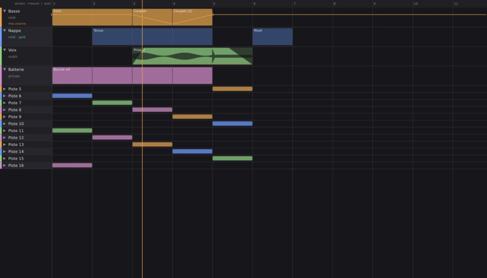
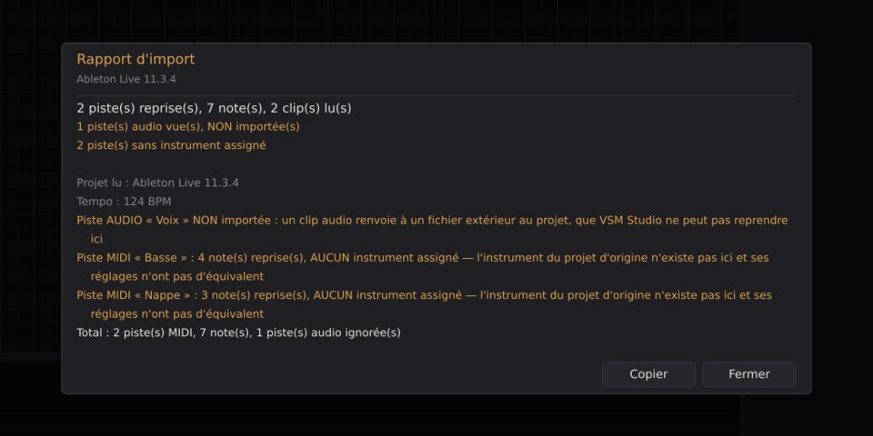
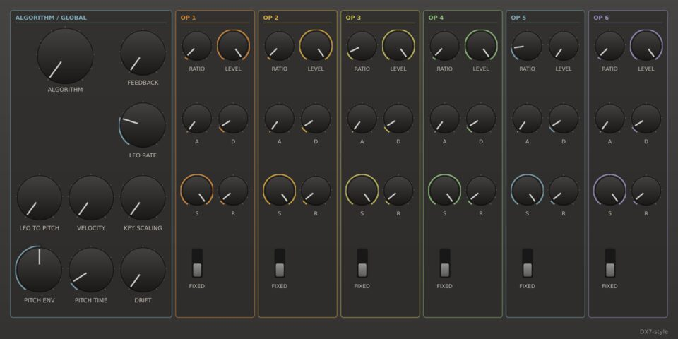
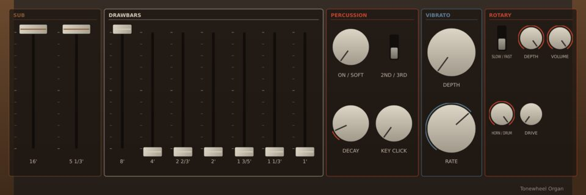
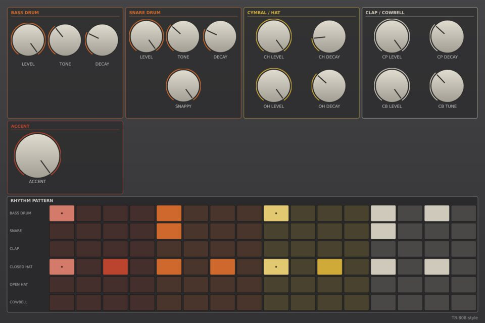
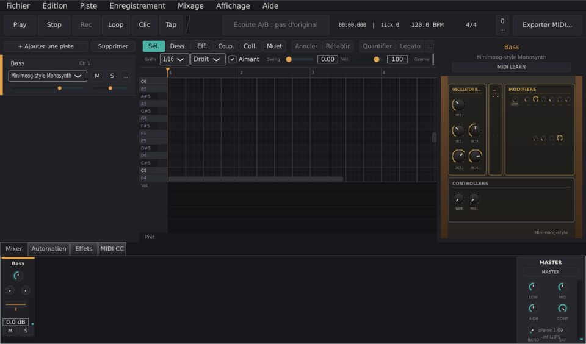
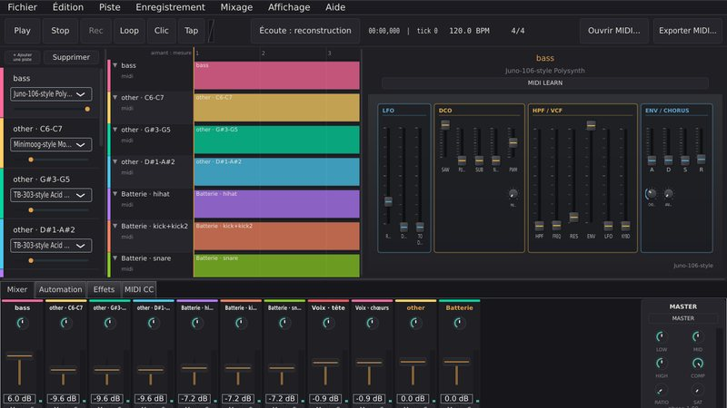

VSM Studio
Every version of this page since 11 Nov 2026, newest first: what changed, and the captures and videos as the page showed them at the time.
Chaque version de cette page depuis le 11 nov. 2026, de la plus récente à la plus ancienne : ce qui a changé, et les captures et vidéos telles que la page les montrait à l’époque.
គ្រប់កំណែនៃទំព័រនេះ តាំងពីថ្ងៃទី 11 វិច្ឆិកា 2026 ពីថ្មីបំផុតទៅចាស់៖ អ្វីដែលបានផ្លាស់ប្តូរ និងរូបថតអេក្រង់ និងវីដេអូ ដូចដែលទំព័របានបង្ហាញនៅពេលនោះ។
Nothing on this page has been regenerated: every capture and video is the file the site published at the time, recovered from its Git history. What the site never published is not here. Since 21 November 2026, every change to the project page adds a version here, and the captures, videos and Last changes it replaces are kept.Rien sur cette page n’a été régénéré : chaque capture et chaque vidéo est le fichier que le site publiait à l’époque, retrouvé dans son historique Git. Ce que le site n’a jamais publié n’y figure pas. Depuis le 21 novembre 2026, chaque changement de la page du projet ajoute ici une version, et les captures, vidéos et derniers changements qu’il remplace sont conservés.គ្មានអ្វីនៅលើទំព័រនេះត្រូវបានបង្កើតឡើងវិញទេ៖ រូបថតអេក្រង់ និងវីដេអូនីមួយៗ គឺជាឯកសារដែលគេហទំព័របានផ្សាយនៅពេលនោះ ដែលបានយកមកវិញពីប្រវត្តិ Git របស់វា។ អ្វីដែលគេហទំព័រមិនដែលផ្សាយ មិនមាននៅទីនេះទេ។ តាំងពីថ្ងៃទី 21 ខែវិច្ឆិកា ឆ្នាំ 2026 ការផ្លាស់ប្តូរនីមួយៗនៃទំព័រគម្រោង បន្ថែមកំណែមួយនៅទីនេះ ហើយរូបថតអេក្រង់ វីដេអូ និងការផ្លាស់ប្តូរចុងក្រោយ ដែលវាជំនួស ត្រូវបានរក្សាទុក។
From the latest to the first.De la plus récente à la première.ពីកំណែចុងក្រោយ ដល់កំណែដំបូង។
-
Sixteen MIDI effectsSeize effets MIDIបែបផែន MIDI ដប់ប្រាំមួយ
The page catches up with the repository: sixteen MIDI effects.
La page rattrape le dépôt : seize effets MIDI.
ទំព័រនេះធ្វើបច្ចុប្បន្នភាពតាម repository៖ បែបផែន MIDI ដប់ប្រាំមួយ។
-
Last changesDerniers changementsការផ្លាស់ប្តូរចុងក្រោយ
The page now ends with a summary of the repository’s latest commits, in English, French and Khmer.
La page se termine désormais par un résumé des derniers commits du dépôt, en anglais, en français et en khmer.
ឥឡូវនេះ ទំព័របញ្ចប់ដោយសេចក្តីសង្ខេបនៃ commit ចុងក្រោយរបស់ repository ជាភាសាអង់គ្លេស បារាំង និងខ្មែរ។
-
Phrase tools and MIDI effectsOutils de phrase et effets MIDIឧបករណ៍ឃ្លា និងបែបផែន MIDI
The page catches up with the repository: the piano roll’s phrase tools and 15 MIDI effects.
La page rattrape le dépôt : les outils de phrase du piano roll et 15 effets MIDI.
ទំព័រនេះធ្វើបច្ចុប្បន្នភាពតាម repository៖ ឧបករណ៍ឃ្លានៃ piano roll និងបែបផែន MIDI 15។
-
64 instruments64 instrumentsឧបករណ៍ភ្លេង 64
The page said 63 instruments while the home page, the README and the GitHub description said 64; it now says 64 throughout.
La page indiquait 63 instruments alors que l’accueil, le README et la description GitHub en annonçaient 64 ; elle dit désormais 64 partout.
ទំព័រនេះធ្លាប់សរសេរថា ឧបករណ៍ភ្លេង 63 ខណៈដែលទំព័រដើម README និងការពិពណ៌នានៅ GitHub សរសេរថា 64។ ឥឡូវនេះ វាសរសេរថា 64 គ្រប់កន្លែង។
-
Its own presentation pageSa page de présentationទំព័របង្ហាញផ្ទាល់ខ្លួន
VSM Studio gets a page of its own, in English, French and Khmer, with screenshots from its repository; the Sound Lab card on the home page now opens it.
VSM Studio reçoit sa propre page, en anglais, en français et en khmer, avec des captures tirées de son dépôt ; la carte du Sound Lab sur l’accueil y mène désormais.
VSM Studio ទទួលបានទំព័រផ្ទាល់ខ្លួន ជាភាសាអង់គ្លេស បារាំង និងខ្មែរ ជាមួយរូបថតអេក្រង់ពី repository របស់វា។ ឥឡូវនេះ កាត Sound Lab នៅលើទំព័រដើម បើកទៅទំព័រនេះ។
9 captures9 capturesរូបថតអេក្រង់ 9
On the pageSur la pageនៅលើទំព័រ 
On the pageSur la pageនៅលើទំព័រ 
On the pageSur la pageនៅលើទំព័រ 
On the pageSur la pageនៅលើទំព័រ 
On the pageSur la pageនៅលើទំព័រ 
On the pageSur la pageនៅលើទំព័រ 
On the pageSur la pageនៅលើទំព័រ 
On the pageSur la pageនៅលើទំព័រ 
On the pageSur la pageនៅលើទំព័រ -
A capture on the home page cardUne capture sur la carte de l’accueilរូបថតអេក្រង់លើកាតនៅទំព័រដើម
The project’s card on the home page shows a screenshot for the first time.
La carte du projet sur la page d’accueil affiche une capture d’écran pour la première fois.
កាតរបស់គម្រោងនៅលើទំព័រដើម បង្ហាញរូបថតអេក្រង់ជាលើកដំបូង។
1 capture1 captureរូបថតអេក្រង់ 1
On the pageSur la pageនៅលើទំព័រ